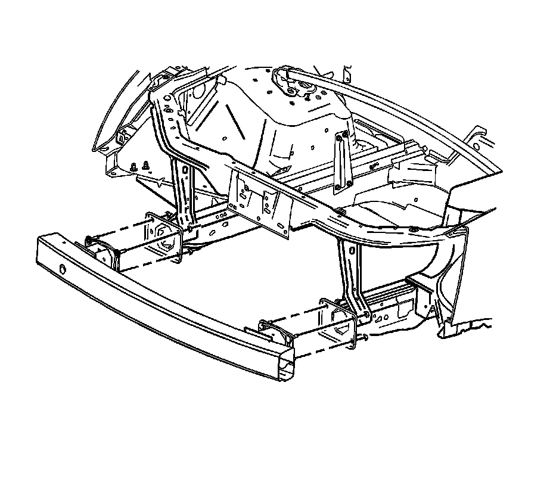

Front Bumper Impact Bar Replacement
Front Bumper Impact Bar Replacement
Removal Procedure
1.Raise and support the vehicle. Refer to Lifting and Jacking the Vehicle .
2.Remove the front bumper fascia. Refer to Front Bumper Fascia Replacement Front Bumper Fascia Replacement .

3.Remove the nuts that secure the impact bar to the frame rail.
4.Remove the front impact bar.
Installation Procedure
1.Install the front impact bar.
Notice:Refer to Fastener Notice .
2.Install the nuts in order to secure the impact bar to the front frame rail.
TightenTighten the nuts to 25 N �m (18 lb ft).
3.Install the front bumper fascia. Refer to Front Bumper Fascia Replacement Front Bumper Fascia Replacement .
4.Lower the vehicle.